15. Güneş'in Hareketindeki Görünen Düzensizliği Kanıtlamaya Yönelik Ön Teoremler
Fakat şimdi Güneş'in görünen düzenli hareketine dair daha iyi bir tespit yapabilmek için evrende merkez noktayı tutan Güneş'le, onu merkez kabul edip etrafında dönen Dünya'ya dair daha açık kanıtlar sunacağız; söylediğimiz gibi, Dünya ile Güneş arasında sabit yıldızlar küresinin enginliğiyle kavranamayacak bir uzaklık varsa, bu durumda Güneş'in, aynı küredeki bir noktaya ya da yıldıza göre düzenli bir harekete sahip olduğu görülecektir. Bunun için AB, ekliptik düzleminde evrendeki en büyük daire; C de Güneş'in yerleştirileceği merkez noktası olsun. Ve buna uygun olarak CD de evrenin engin derinliğiyle karşılaştırıldığında, Güneş ile Dünya arasındaki mesafe olsun; Dünya'nın merkezinin yıllık deviniminin yer alacağı CDE dairesi de ekliptiğin aynı düzleminde çizilsin. AB üzerinde alınacak bir noktaya veya yıldıza göre Güneş'in düzenli bir harekete sahip olduğunun görüleceğini söylüyorum. Bir nokta alınsın ve o A olsun. Ve D'de yer alan Dünya'dan Güneş'in görünümü, ona doğru DCA olarak uzatılsın.
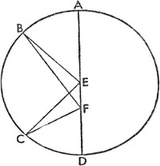
Bu durumda Dünya, DE yayı boyunca bir yere doğru hareket ettirilsin ve AE ile DE, Dünya'nın konumu olan E'den çizilsin. Buna göre Güneş, E'den B noktasında görünecektir. Ve AC, CD ya da eşiti olan CE ile karşılaştırıldığında uçsuz bucaksızdır; AE de CE ile karşılaştırıldığında uçsuz bucaksız olacaktır. Bunun için AC'de bir nokta F olarak alınsın ve EF'ye eklensin. Buna göre, tabanın C ve E uçlarından çizilen iki düz çizgi A noktasında EFC üçgeninin dışına indiği için, Euclides'in Elementler'inin birinci kitabının XXI. bölümünde gösterilenin tersinden giderek, FAE açısı EFC açısından küçük olur. Uçsuz bucaksızlığa uzanan düz çizgilerin oluşturacağı CAE açısı en sonunda algılanamayacak ölçüde dar olacağından, CAE açısı, AEC açısının BCA açısından farkına eşittir. Dahası aralarındaki farkın belirsizliğinden ötürü BCA ile AEC açısı eşit; AC ile AE kenarları paralel görünür. Ve gösterildiği gibi Güneş'in, merkez noktası olan E'nin etrafında dönüyormuşçasına, sabit yıldızlar küresindeki bir noktaya göre düzenli bir hareketi varmış gibi görünür. Fakat düzensiz hareketi böylece gösterilmiş olur; zira Dünya'nın merkezinin yıllık devinimdeki hareketi tümüyle Güneş'in merkezinin etrafında gerçekleşmez. Bu iki yolla; ya Güneş'in merkezi olmayan dış merkezli bir daire üzerinden ya da bir eş merkezli dairedeki bir dış tekerleme eğrisi üzerinden anlaşılabilir. Şimdi bu yolla dış merkezli daire üzerinden konu açıklanmış olur. Bu kapsamda ABCD, ekliptik düzleminde dış merkezli bir daire olsun ve onun merkezi E, evrenin ya da Güneş'in merkezinden uzakta yer alsın. Evrenin merkezi F; ABCD dairesinin çapı da her iki merkezden geçen AEFD olsun. Romalılar tarafından en yüksek apsis olarak adlandırılan, Dünya'nın merkezine en uzak noktadaki yeröte A'da; Dünya'nın merkezine en yakın noktada, en alçaktaki apsis olan yerberi de D'de olsun. Bu durumda Dünya, söylendiği gibi, düzenli olarak kendi ABCD yörüngesinde, E merkezinin etrafında döndürülünce; F'nin etrafında düzensiz bir hareket olduğu da ortaya çıkacaktır. Bunun için AB yayı, CD yayına eşit olsun ve BE, CE, BF ve CF düz çizgileri çizilsin. Bu durumda AEB açısı, CED açısına eşittir; çünkü AEB ile CED açıları E merkezinin etrafında eşit yayları görür. CFD, görüş açıdır ve CFD dış açısı, CED iç açısından büyüktür; fakat AEB açısı, CED açısına eşittir. Bu durumda CFD açısı, AEB açısından büyüktür. Fakat AEB dış açısı, AFB iç açısından büyüktür; dahası CFD açısı da AFB açısından büyüktür. Fakat eşit süreler hem CFD hem de AFB açısını ortaya çıkarır; zira AB yayı, CD yayına eşittir. Bu yüzden hareket E civarında düzenli, F civarında düzensiz görünecektir. Aynı hususu daha basit bir şekilde göstermek de mümkündür; çünkü AB yayı, CD yayına göre F noktasından daha uzaktır. Buna göre Eucleides'in üçüncü kitabının VII. bölümünde de gösterildiği gibi, AB yayını kesen AF ve BF çizgileri, CD yayını kesen CF ile DF çizgilerinden daha uzundur ve Optik'te de gösterildiği gibi eşit büyüklükler daha yakındayken uzaktakinden daha büyük görünür. Ve bu şekilde dış merkezli daireyle ilgili sunulan da ortadadır. Aynı husus eş merkezli bir dairede bir dış tekerleme eğrisi vasıtasıyla da açıklanabilir.
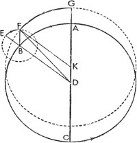
Buna göre bir eş merkezli ABCD dairesinin merkezi ve Güneş'in yer alacağı evrenin merkezi E'de olsun. Aynı düzlemde A, FG dış tekerleme eğrisinin merkezi olsun; her iki merkez üzerinden CEAF düz çizgisi çizilsin. F, dış tekerleme eğrisinin yerötesi; I da yerberisi olsun. Buna göre, A'da düzenlilik, FG dış tekerleme eğrisindeyse görünen düzensizlik olduğu açıktır. Buna göre Dünya'nın merkezinin hareketi batıdaki yerötesi F'deyken A'nın hareketi doğuya doğru, yani B yönünde olursa, yerberi I'da E'nin daha hızlı olduğu görülecektir; zira A ve I'ya ait iki hareket aynı yöndedir.
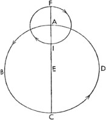
Fakat yerötesi F'de E noktası daha yavaş hareket ediyor görünür; çünkü bu nokta çekişen iki karşıt güçle devindirilir ve G'ye yerleştirilen Dünya düzenli hareketin batı yönünde, K'ye yerleştirilen Dünya ise aynı hareketin doğu yönünde yer alır; Dünya'nın düzenli hareketten uzaklığı, Güneş'in düzensiz hareket ediyor gibi görünmesiyle uyumlu olarak AK ve AG yaylarıyla hesaplanır. Dış tekerleme eğrisi sayesinde olduğu gibi, aynı şekilde dış merkezli çember sayesinde de sonuç alınabilir; gezegenin geçişi dış tekerleme eğrisinde ya da aynı düzlemde aynı eş merkezli daireyi çizer; dış merkezli dairenin merkezinin eş merkezli dairenin merkezinden uzaklığı dış tekerleme eğrisinin yarıçapına eşittir. Tüm bunlar üç şekilde meydana gelir; çünkü eş merkezli dairedeki dış tekerleme eğrisi ve dış tekerleme eğrisindeki gezegen aynı devinimi gerçekleştirir, fakat hareketleri birbirine zıtsa; gezegenin hareketi, yerötesi ve yerberisi, konum değiştirmeyen sabit bir dış merkezli daire çizecektir. Bu şekilde ABC, eş merkezli daire; D, Dünya'nın merkezi; ADC de çap olsun. Dış tekerleme eğrisi A'da olduğunda; gezegen, G'de bulunan ve yarıçapı DAG düz çizgisinde olan dış tekerleme eğrisinin yerötesinde olacak şekilde ayarlama yapalım: Eş merkezli dairenin AB yayı alınsın ve merkezi B, yarıçapı AG olsun. EF dış tekerleme eğrisi çizilsin ve BD ile BE düz bir çizgide uzatılsın; EF yayı AB yayına benzer olsun fakat EF yayı karşıt yönde yer alsın. Gezegen –ya da Dünya– F'de olsun ve bunlara BF de eklensin.
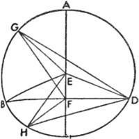
Bu durumda AD çizgisinde DK, BF'ye eşittir. O halde EBF açısı, BDA açısına eşit olduğuna göre; BF, DK'ye eşit, DK'ye paraleldir; zira düz çizgiler eşit ve paralel düz çizgilere eklenirse, Euclides'in birinci kitabının XXXIII. bölümünde de gösterildiği gibi, aynı zamanda hem eşit hem de paralel hale gelmiş olurlar. DK, AG'ye eşit ve AK de onların ortak kesişiminde olduğuna göre GAK, AKD'ye ve buna bağlı olarak KF'ye eşittir. Bu durumda merkezi K, yarıçapı KAG olarak çizilen daire F'den geçecektir. AB ile EF'nin bileşiminden oluşan bir hareketle F noktası bu daireyi dış merkezli, eş merkezli daireye eşit ve bu yüzden de sabit olarak tanımlar. Dış tekerleme eğrisi eş merkezli daireyle oransal olarak eşit dönüşler yapınca, dış merkezli dairenin bu şekilde çizilen apsitleri mecburen aynı yerde kalır.
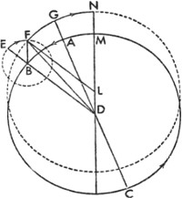
Fakat dış tekerleme eğrisinin merkezi ve çevresi, ortaya birbiriyle orantılı düzensiz devinimler çıkarıyorsa gezegenin hareketi sabit bir dış merkezli daire değil, gezegenin hareketinin dış tekerleme eğrisinin merkezinden daha hızlı ya da yavaş olmasına göre doğuya ya da batıya doğru taşınan bir daire çizer. Bu şekilde, EBF açısı BDA açısından büyükse, BDM açısı, EBF açısına eşit olur. DM doğrusunda DL, BF'ye eşit alınırsa, merkezi L, yarıçapı AD'ye eşit olacak şekilde LMN olarak çizilen dairenin, F gezegeninden geçeceği de gösterilmiş olur. O halde gezegenin bileşik hareketi sayesinde yeröte G noktasından GN yayı boyunca batıya doğru geçen dış merkezli dairenin NF yayı çizilir. Buna karşılık dış tekerleme eğrisindeki gezegenin hareketi daha yavaşsa, bu durumda eş merkezli dairenin merkezi de onu dış tekerleme eğrisinin taşındığı doğu yönünde izlemelidir; bu durumda EBF açısı, BDM açısına eşit olup aynı zamanda (ikisi de) BDA açısından büyükse, bahsettiğimiz durumun ortaya çıkacağı da açıktır. Görünen aynı düzensizlik, eş merkezli dairedeki bir dış tekerleme eğrisi ya da eş merkezli daireye eşit olan dış merkezli daire aracılığıyla ortaya konur; eş merkezli ve dış merkezli dairenin merkezleri arasındaki mesafe dış tekerleme eğrisinin yarıçapına eşit olduğu müddetçe, bu daireler hiçbir şekilde birbirlerinden farklı olmaz. Bu yüzden göklerde hangisinin olduğunu belirlemek de kolay değildir.
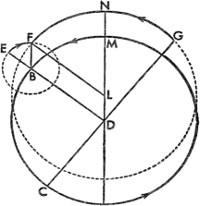
Gerçekten de Ptolemaeus, Güneş için geçerli olduğunu düşündüğü, apsitlerin basit düzensizliğini, kesinliğini ve değişmez konumlarını incelerken dış merkezli daire şemasının yeterli olduğu sonucuna varmıştı. Oysa iki ya da daha fazla yolda dolaşan beş gezegen ve Ay'la ilgili olarak dış tekerleme eğrilerini taşıyan eş merkezli dairelere başvurmuştu. Dahası, buradan hareketle, Ptolemaeus'ta olduğu gibi, düzenlilik ile görünüm arasındaki en büyük farkın, dış tekerleme eğrisinin söz konusu olduğu durumda gezegenin dış merkezli dairedeki en yüksek apsit ile en alçak apsit arasındaki ortalama konumda onu taşıyan daireyle kesişim noktasında görüldüğü kolayca gösterilmiş olur. Dış merkezli daireyle ilgili durumda: E merkezinin etrafında, merkezin dışındaki F'deki Güneş'ten geçen AEC çaplı bir ABCD dairesi olsun. Bu durumda BFD çizgisi çapa dik olarak F boyunca çizilsin; BE ve ED de buna eklensin. A, yeröte; C yerberi; B ile D de onların arasında görünen ortalamalar olsun.
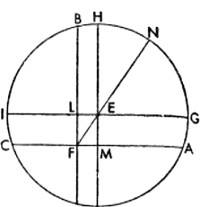
Bu durumda tepe noktası çevre üzerinde, tabanı EF olan ve B ya da D açısından daha büyük hiçbir açının olamayacağını söylüyorum. G ve H, B'nin her iki yanında alınsın ve GD, GE, GF ile HE, HF ve HD de eklensin. FG doğrusu, merkeze DF çizgisinden daha yakın olduğundan; FG çizgisi, DF çizgisinden büyüktür. Ve bu yüzden GDF açısı, DGF açısından büyüktür; fakat EDG açısı, EGD açısına eşittir, zira tabana inen EG ile ED kenarları eşittir. Bu durumda EDF açısı, EGF açısından büyüktür; fakat EDF açısı da EBF açısına eşittir. Benzer şekilde DF çizgisi, FH çizgisinden; FHD açısı, FDH açısından büyüktür. Fakat EHD açısı, EDH açısına eşittir; zira EH kenarı, ED kenarına eşittir. Bu durumda, çıkarma yaparsak, EDF açısı, EHF açısından büyük olur; fakat EDF açısı, EBF açısına eşittir. O halde B ve D noktalarındaki açılardan daha büyük hiçbir açı tabanı EF olacak şekilde oluşturulamaz. Ve bu yüzden düzenlilik ile görünüm arasındaki en büyük fark da yeröte ile yerberi arasındaki ortalama konumda bulunur.
16. Güneş'in Görünen Düzensizliği Üzerine
Bu veriler kaba hatlarıyla ortaya konmuştur ve bu kanıtlar sadece Güneş'in görünen hareketleri için değil, diğer gezegenlerin düzensizliği için de yararlıdır. Bu yüzden Güneş'le ve Dünya'yla ilgili, evvela Ptolemaeus ve diğer eskiler tarafından bize ulaştırılan, daha sonra çağımızın ve deneyimimizin bize öğrettiği bütün verileri inceleyeceğiz.
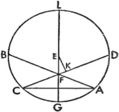
Ptolemaeus'a göre ilkbahar ekinoksu ile yaz gündönümü arasında 94,5; gündönümü ile sonbahar ekinoksu arasında 92,5 gün vardır. Buna uygun olarak ilk aralıkta 93º9'lık, ikinci aralıkta ise 91º11'lık ortalama ve düzenli bir hareket söz konusuydu. ABCD, bu şekilde bölümlendirilen yıla ait çember; E de bunun merkezi olsun. Dönemin ilk periyodu için AB yayı 93º9', ikinci periyodu için BC yayı 91º11' olsun. İlkbahar ekinoksu A'dan, yaz gündönümü B'den, sonbahar ekinoksu C'den, geri kalan kış gündönümü de D'den görünsün. Bunlara AC ve BD de eklensin. AC ve BD, birbirini F'de dik keser. O halde ABC yayı 180ºden, AB yayı da BC yayından büyük olduğu için, Ptolemaeus buradan çemberin merkezinin BF ile FA çizgileri arasında, yerötenin de ilkbahar ekinoksu ile Güneş'in yaz dönencesi arasında konumlandığını bulmuştu. Buna göre L'de BFD'yi kesecek olan IEG, E merkezinden geçecek ve AFC'ye paralel olacak şekilde çizilsin; M'de AF'yi kesecek olan HEK de, BFD'ye paralel olarak çizilsin. Bu yolla, çapı FE olan, FEN düz çizgisi üzerinde uzanan dik açılı paralelkenarın oluşturulmasıyla, Dünya'nın Güneş'ten en uzak mesafesi ve N'deki yerötenin konumu gösterilmiş olur. O halde ABC yayı 184º19'ya; AH yayı, ABC yayının yarısına, o da 92º9,5'ya; HB yayı, AH yayının AGB yayından farkına, yani 59'ya; yine AG yayı, AH yayının 90ºden farkına, yani 2º10'ya eşit olduğuna göre; LF, yarıçap 10.000 birimken, AG'nin iki katını ayıran kirişin yarısına, yani 377 birime eşittir. Fakat EL, BH'nin iki katını ayıran kirişin yarısına, yani 172 birime eşittir. Ve böylece ELF üçgeninin iki kenarı bulunduğundan, EF kenarı 414 birime; o da, yarıçap 10.000 birimken, NE yarıçapının yaklaşık 1/24'üne eşittir. Fakat EF'nin EL'ye oranı, NE'nin NH'nin iki katını ayıran kirişin yarısına olan oranına eşittir. Bu durumda NH yayı, 24º30'dır. Ve böylece NEH açısı bulunmuş olur; dahası NEH açısı, görünen harekete ait LFE açısına da eşittir. Bu aralık boyunca Ptolemaeus'tan da önceki en büyük apsit Güneş'in yaz gündönümünden önce gelir. Fakat IK yayı, 90ºye; IC yayı, AG yayına; DK yayı, HB yayına eşittir. O halde CD yayı, IC ile DK yaylarının toplamının IK yayından farkına, yani 86º51'ya; DA yayı da CDA yayının CD yayından farkına yani 88º49'ya eşittir. Fakat burada 86º51'ya karşılık 88,125 gün; 88º49'ya karşılık da 90 gün ve 3 saat –günün sekizde biri– olmalıdır. Bu periyotlar boyunca Güneş, Dünya'nın düzenli hareketinden ötürü, sonbahar ekinoksundan kış gündönümüne ve yılın geri kalan kısmındaysa kış gündönümünden ilkbahar ekinoksuna geçmiş görünür. Gerçekten de Ptolemaeus, bütün bu verilerin, kendisinden evvel Hipparchus'un kaydetmiş olduklarından farklı olmadığını doğrular. Buna göre Ptolemaeus, dönemin geri kalan kısmı için, yaz dönencesinden evvel en yüksek apsidin 24º30' olması ve dış merkezliğin, söylediğimiz gibi, yarıçapın 1/24'ü olarak her daim aynı kalması gerektiğini düşünmüştür. Fakat artık her ikisinin de açık bir farkla değiştiği keşfedilmiştir.
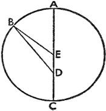
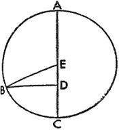
Machometus Arecensis, ilkbahar ekinoksundan yaz gündönümüne 93 gün, 35 dakika; sonbahara kadar ise 186 gün, 37 dakika olduğunu kaydetmiştir; buradan Ptolemaeus'un ölçümünden hareketle, yarıçap 10.000 birimken dış merkezliğin 346 parçadan daha fazla olmadığını bulmuştur. İspanyol Arzachel dış merkezliğe dair oranda ona uymuşsa da, yeröteyi gündönümünün 12º10' batısı olarak bulmuş; Machometus Arecensis ise yeröteyi aynı gündönümünün 7º43' batısı olarak hesaplamıştır. Bütün bu çıkarımların ve günümüzdeki gözlemlerin doğruladığı gibi, Dünya'nın merkezinin hareketinde hâlâ başka bir düzensizliğin olduğu açıktır. Dikkatimizi bütünüyle bunları incelemeye verdiğimiz on ya da daha fazla yıl içinde, özellikle de İsa'dan sonra 1515'te, ilkbahar ekinoksundan sonbahar ekinoksuna 186 gün 5,5 dakika olduğunu bulduk. Ve bizden evvelkilerin bilgileriyle ilgili şüphe uyandıran gündönümlerini hesap ederken yanılmamak adına bu çalışmamızda, ekinokslarla karşılaştırıldığında gözlenmesi hiç de zor olmayan Güneş'in diğer kesin konumlarını, örneğin Boğa, Aslan, Akrep ve Kova takımyıldızlarındaki ortalama konumlarını da değerlendirmeye aldık. Buradan hareketle sonbahar ekinoksundan Akrep'in orta noktasına kadar 45 gün 16 dakika; ilkbahar ekinoksuna kadar ise 178 gün 53,5 dakika olduğunu bulduk. Bu durumda düzenli hareket, ilk aralık boyunca 44º37'; ikinci aralık boyunca ise 176º19'ydı. Bu ön bilgiler alındığına göre; ABCD çemberi yeniden çizilsin ve A, Güneş'in ilkbahar ekinoksunda göründüğü nokta; B, sonbahar ekinoksunun göründüğü nokta; C ise Akrep'in orta noktası olsun. Birbirini Güneş'in merkezi olan F'de kesen AB ile CD de eklensin ve AC yayı kirişle ayrılsın. Bu durumda CB yayı 44º37'ya eşit olduğundan, iki dik açı 360º iken, BAC açısı 44º37'ya eşittir. Ve dört dik açı 360º iken, BFC açısı 45ºye eşit olup; bu değer, görünen harekete aittir; fakat 2 dik açı 360º iken BFC açısı 90ºdir. Buradan hareketle ACD açısı, 45º23'ya eşittir; zira AD yayı da 45º23'ya eşittir. Fakat ACB yayı, 176º19'ya; AC yayı, ACB yayının BC yayından farkına, yani 131º42'ya; CAD yayı da, AC yayı ile AD yayının toplamına, o da 177º5'ya eşittir. O halde ACB yayı, 180ºden; CAD yayı da 180ºden küçük olduğuna göre, çemberin merkezinin geriye kalan BD üzerinde konumlandırılacağı açıktır. Ve bu merkez E olsun; E üzerinden LEFG çapı çizilsin. L, yeröte; G de yerberi olsun. EK, CFD'ye dik olarak çizilsin. Verilen yayları ayıran kirişler zaten tabloda verilmişti: Çap 200.000 birimken, AC 182.494 birime; CFD de 199.934 birime eşittir. Buna uygun olarak ACF, açılarıyla birlikte bulununca; kenarların oranı, doğrusal üçgenlerle ilgili ilk kural sayesinde bulunacaktır. CF, 97.697 birim, AC de 182.494 birimdir; bu nedenle FK, CD'nin yarısının CF'den farkına; o da 2000 birime eşittir. Ve CAD yayının 180ºden farkı da 2º55'ya eşittir; EFK üçgeninde dik açıyı oluşturan FK ve KE kenarları belirlenince, üçgenin kenarları ve açıları da bulunmuş olur. EL 10.000 birimken; EF, 323 birimdir ve dört dik açı 360º iken EFK açısı, 51,6ºdir. Bu durumda yapılan toplamayla AFL açısı 96,6ºye; yapılan çıkarmayla BFL açısı da 83,3ºye eşit bulunur. Fakat EL 60º, EF de yaklaşık 1º56'dır. Bu, Güneş'in, yörünge çemberinin merkezinden uzaklığıdır ve bu şekilde –her ne kadar Ptolemaeus'a göre 1/24'ü ise de– yörünge çemberinin yarıçapının 1/31'i olmuş olur. Bu durumda yaz gündönümünün 24º30' batısında bulunan yeröte 6,6º doğusunda yer almış olur.
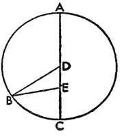
17. Güneş'in İlk ve Yıllık Düzensizliğinin Hususi Farklarıyla Beraber Gösterilmesi
O halde Güneş'in düzensiz hareketine dair birçok farklılık bulunduğundan, evvela diğerlerine göre daha bilindik olan yıllık farkın anlaşılması gerektiğini düşünüyoruz.
Buna uygun olarak yine merkezi E, çapı AEC olan bir ABC çemberi oluşturulsun; yeröte A'da; yerberi C'de, Güneş de D'de olsun.
Düzenli ve görünen hareketin arasındaki en büyük farkın konumunun, apsitlerin görünen harekete nazaran orta noktasında belirdiği gösterilmişti. Bunun için BD, AEC'ye dik olarak çizilsin ve B noktasında çevreyi kessin; BE de eklensin. Bu durumda BDE dik üçgeninin iki kenarı, yani çemberin yarıçapı olan BE ile Güneş'in merkezden uzaklığı olan DE verilince üçgen de açılarına kavuşmuş olacak. Ve düzenli hareketin BEA açısı ile görünen hareketin EDB dik açısı arasındaki fark olan DBE açısı bulunmuş olacak. Fakat DE daha büyük ya da daha küçük olduğunda, üçgenin tüm niteliği değişir. Bu yüzden Ptolemaeus'tan evvel B açısı 2º23', Machometus Arecensis ve Arzachel zamanında 1º59', günümüzde ise 1º51'dır. Ve Ptolemaeus'a göre AEB açısıyla kesilen AB yayı 92º23', BC yayı 87º37'; Machometus Arecensis'e göre AB yayı 91º59', BC yayı 88º1'; günümüzde ise AB yayı 91º51', BC yayı 88º9'dır. Bunlarla diğer ayrımlar da tümüyle açık edilir. Bunun için aşağıdaki şekilde de görüldüğü gibi, başka bir AB yayı alınsın. Ve AEB açısı, BED iç açısı ve BE ile ED kenarları verilsin. Doğrusal üçgen hesabıyla EBD açısı, eşitleme, yani düzenli ve görünen hareket arasındaki fark olarak ortaya çıkacaktır. Ve söylendiği gibi, ED kenarının değişiminden ötürü tüm bu farkların da değişmesi gerekir.
18. Boylamda Düzenli Hareketin İncelenmesi Üzerine
Bunlar Güneş'in yıllık düzensizliğine dair bilgiyi, görünen basit farklılık sayesinde değil de sürenin uzunluğunu bulmaya yarayan ayrımla karıştırılan farklılık sayesinde verir. Bunları birbirinden daha sonra ayıracağız. Bu arada Dünya'nın merkezinin ortalama ve düzenli hareketi de rakam rakam verilmiş olacak; bu rakamlar, hareketin düzensizliğin herhangi bir farklılığından ayrılabileceği ve yeri geldiğinde artabileceği ölçüde kesin olacak.
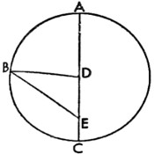
Bu yolla gerekli açıklama da yapılmış olacak. Bu sonbahar ekinoksunu, Hipparchus tarafından Calippus'un 3. periyodunun 32. yılında –yukarıda da söylendiği gibi, İskender'in ölümünden sonraki 177. yılda– ve takvime eklenen üçüncü günden sonraki gece yarısında, yani sonraki günde İskenderiye'de gözlemlenmiş olan olarak aldık. Fakat İskenderiye, boylamda Krakow'un doğusunda yaklaşık 1 saatlik mesafede yer aldığından; bu, yaklaşık olarak gece yarısından önceki ilk saate denk gelmekteydi. O halde sabit yıldızlar küresinde sonbahar ekinoksunun konumu, yukarıda yapılan hesaba göre, Koç'un başından itibaren 176º10'daydı ve bu da Güneş'in görünen konumuydu. En yüksekteki apsitten mesafesi de 114,5º idi. Bu yapıya uygun olarak D merkezinin etrafında Dünya'nın merkezinin çizdiği bir ABC çemberi tasarlansın. ADC, çap olsun ve Güneş çapta, E noktasına yerleştirilsin; yeröte A'da; yerberi C'de olsun. Fakat B de Güneş'in sonbahar ekinoksunda belirdiği nokta olsun ve BD ile BE düz çizgileri eklensin. DEB açısı, 114,5º olduğuna; Güneş'in yeröteden uzaklığına karşılık geldiğine ve BD 10.000 birimken DE kenarı 414 birim olduğuna göre, doğrusal üçgenlerle ilgili dördüncü teorem sayesinde BDE üçgeni kenarları ve açılarıyla bulunmuş olur. Ve BDE açısı, BDA açısına; o da BED açısına, yani 2º10'ya eşittir; fakat BED açısı, 114º30'dır. Buradan hareketle BDA açısı, 116º40'; Güneş'in sabit yıldızlar küresinde Koç'un başından itibaren ortalama ve düzenli konumu ise 178º20'dır. Bunu Krakow'la aynı meridyendeki Frauenburg'da, İsa'dan sonraki 1515. yılda, Mısır takvimine göre İskender'in ölümünden sonraki 1840. yılda ikinci ay olan Phaophi'nin 6. gününde, gündoğumundan yarım saat sonra tarafımızdan gözlemlenen sonbahar ekinoksuyla karşılaştırdık. Bu zamanda hesaplama ve gözlem sayesinde sonbahar ekinoksunun, sabit yıldızlar küresinde 152º45' ve önceki kanıtla da uyumlu olarak en yüksek apsitten mesafesinin 83º29' olduğunu bulduk. Bu durumda iki dik açı 180º iken BEA açısı 83º20'ya eşittir ve üçgenin iki kenarı da bulunmuş olur: BD 10.000 birimken DE 323 birimdir. Doğrusal üçgenlerle ilgili dördüncü teoremden de anlaşıldığı gibi, DBE açısı yaklaşık 1º50'dır. BDE üçgeninin etrafına bir çember çizilirse, iki dik açı 360º iken BDE çevre açısı 166º40' olur. Ve çap 20.000 birimken BD kirişi 19.864 birimdir. Ve BD'nin DE'ye oranı bulunur; DE kirişi aşağı yukarı 640 birimdir; DE, DBE kirişine eşittir ve DBE çevre açısı 1º50' iken, merkezde 3º40'dır. Ve bu hem eşitleme, hem de düzenli ile görünen hareket arasındaki farktır.
Ve BDA açısı, DBE ile BED açısının toplamına, yani 1º50' ile 83º20'nın toplamına, yani 85º10'ya, yani düzenli hareketin yeröteden uzaklığına eşittir ve bu yüzden Güneş'in ortalama konumu, sabit yıldızlar küresinde 154º35'dır. O halde her iki gözlem arasında 1662 Mısır yılı 37 gün 18 dakika 45 saniye vardır. Ve ayrıca ortalama ile düzenli hareket, yani toplam 1660 devinim, düzenli hareketler tablosunda açıkladığımız rakama da uygun bir şekilde aşağı yukarı 336º15'ya denk gelir.
19. Güneş'in Düzenli Hareketinin Konumlarının ve Esaslarının Saptanması Üzerine
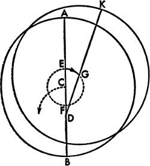
Sonuç olarak Büyük İskender'in ölümüyle Hipparchus tarafından gerçekleştirilen gözlem arasında 176 yıl 362 gün 27,5 dakika vardı; hesaba göre bu süre içinde ortalama hareket 312º43'ydı. Bu dereceler, Hipparchus'a ait toplam 178º20'lık gözlemden ve çemberin 360ºsinden çıkarılınca geriye, İskender'in ölümünden sonraki ilk yıllarda, Mısırlıların ilk ayında, Thoth'un ilk gününün öğlen vakti için Krakow'da ve gözlemimizin gerçekleştiği Fraeuenburg'da 255º37'lık bir konum kalacaktır. Bu zamandan Julius Caesar'ın Roma takviminin başlangıcına kadarki 278 yıl 118,5 gün içinde, tüm devinimlerin dışında ortalama hareket 46º27'ydı. Bu derecelerin İskender dönemindeki konumun derecelerine eklenmesi bize 272º4'yı, yani Romalıların günlerin ve yılların başlangıcı olarak aldıkları Ocak ayının başlangıcından önceki gece yarısında Caesar'ın konumunu verir. Daha sonra 45 yıl 12 günde ya da Büyük İskender'in ölümünden sonraki 323 yıl 130,5 günde; İsa'nın 272º31'daki konumu kendini gösterir. Ve İsa, 194. olimpiyatın üçüncü yılında doğduğundan ilk olimpiyatın gerçekleştiği yılın başlangıcından Ocak ayının başlangıcından önceki gece yarısına kadar 775 yıl 12,5 gün olduğunu söyleyen hesaplamalar, Hekatombaion ayının ilk gecesindeki ilk olimpiyatın konumu olarak benzer şekilde 96º16'yı verir ki bu günün yıldönümü, Roma takvimine göre Temmuz ayının başına denk gelir. Bu yolla Güneş'in basit hareketinin başlangıcı sabit yıldızlar küresine göre hesaplanmış olur. Dahası, bileşik hareketin konumları, ekinokslardaki devinmenin eklenmesiyle bulunur; diğerleri için de bu geçerlidir: 90º59'da olimpiyatın; 226º38'da İskender'in; 276º59'da Caesar'ın ve 278º2'da İsa'nın dönemine ait konum. Söylediğimiz gibi, bütün bunlar, Krakow meridyeni için geçerlidir.
20. Apsitlerdeki Değişimden Kaynaklanan Güneş'teki İkinci ve İkili Düzensizlik Üzerine
Fakat Güneş'in apsidinin değişkenliğine dair daha büyük bir güçlük söz konusudur; zira her ne kadar Ptolemaeus onun sabit olduğunu düşünmüşse de, başkaları sabit yıldızlar hareket halinde olduğu için Güneş'in de yıldızlı kürenin hareketini izlediğini düşünmüştü. Arzachel bu hareketin aynı zamanda düzensiz ve geriye doğru olduğunu kabul etmişti; her ne kadar söylendiği gibi, Machometus Arecensis, Ptolemaeus'tan sonraki 740 yıl boyunca yaklaşık 17º ilerleyen yeröteyi, gündönümünün batısında 7º44' olarak bulmuşsa da, 193 yıl sonra bu Arzachel'e, yaklaşık 4º30' geriye doğru hareket ediyor görünmüştü. Ve bu yüzden Arzachel, küçük bir çemberdeki yıllık yörünge dairesinin merkezi sayesinde oluşmuş başka bir hareketin daha olduğunu düşünmüştü; yeröte, bu hareketle uyumlu olarak geri ve ileri döndürülmüştü; dairenin merkezi de Dünya'nın merkezine göre belirsiz bir mesafedeydi. Bu yeteri kadar iyi bir yaklaşım idiyse de, pek kabul görmemiştir; zira evrensel ölçüde diğer yaklaşımlarla uyumlu değildir. Hareketin seyrindeki silsile düşünülsün; Ptolemaeus'tan evvelki bir zamanda hareket durma noktasına gelmişti; yaklaşık 740 yıl boyunca 17ºlik zikzak çizmişti; daha sonra 200 yıl içinde 4º veya 5º geriye yönelmişti; bize kadarki geri kalan süredeyse ilerlemişti; fakat toplam süre içinde başka bir gerileme veya duraklama görülmemişse de bunlar zorunlu bir biçimde geri ve ileri doğru olmak üzere karşıt hareketlere karışmıştı.
Ve bunun çizgisel ve dairesel hareket içinde belirdiği hiçbir şekilde anlaşılamaz. Bu yüzden birçokları, gözlemlerine bir hatanın sızmış olduğuna inanır. Fakat her matematikçi, çabasında ve ilgisinde birbirine benzer; öyle hangisini diğerlerine tercih etmemiz gerektiği müphemdir. Her halükârda Güneş'in, büyüklüğü çok küçük ve hatta fark edilmesi neredeyse mümkün olmayan yerötesini hesaplamada diğerlerine nazaran daha büyük bir güçlük bulunduğunu kabul ediyorum; zira yeröte ile yerberi üzerinde 1ºlik bir hareket eşitlemede sadece yaklaşık 2'lık; ortalama apsitler üzerindeyse 1'lık harekete ve 5º ya da 6ºlik bir farka sebep olur; bu yüzden önemsiz bir hata kendisinden çok daha büyük bir hataya neden olabilir. O halde yeröteyi Yengeç'in 6,6ºsine yerleştirmek için, Güneş ve Ay tutulmaları bize daha çok kesinlik sağlamadıkça, yıldız fallarının sunduklarıyla yetinemeyiz; zira gözlemlerimizde herhangi bir hata belirirse, tutulmalar onu hatasız bir şekilde gözler önüne serer. O halde en büyük olasılığa uygun olarak, dikkatimizi tümüyle hareketi anlamaya verebiliriz: Hareket doğu yönünde olup, düzensizdir; zira yerötenin Hipparchus ile Ptolemaeus arasında sekteye uğradıktan sonra günümüze kadar düzenli bir şekilde devam ettiği görülüyor; sadece diğer bütün hareketlerin uyum içinde olmasına rağmen Machometus Arecensis ile Arzachel arasındaki dönemde bu hareketin yanlışlıkla aşağı doğru ilerleme gösterdiğine inanılması hariç. Buna göre dairesel hareketin aynı rotasına uyan Güneş'in hareketine özgü eşitlemenin benzer şekilde azalmayı durdurmadığı ve düzeltmelerin benzer bir değişimin ya da ekliptiğin eğimindeki ilk ve basit ayrıklıkla kesişimindeki bu iki düzensizliğe göre yapıldığı görülüyor. Fakat yine usule uygun olarak konunun daha da açık hale getirilmesi adına, ekliptik düzleminde merkezi C olan bir AB çemberi; ACB çapı ve bu çap üzerinde evrenin merkezinde yer alan D Güneş küresi olsun. C'nin etrafında, Güneş'i kapsamayan küçük, başka bir EF çemberi çizilsin. Ve Dünya'nın yıllık devinimine ait merkezin, bu küçük çemberin etrafında oldukça yavaş bir şekilde devindiği kabul edilsin. Ve küçük EF çemberi, AD çizgisiyle birlikte doğuya doğru, yıllık devinimin merkezi EF çemberi boyunca batıya doğru oldukça yavaş bir harekete sahip olduğundan, yıllık yörünge dairesinin merkezi bazen DE'ye denk gelen en uzun mesafede daha yavaş, bazen de DF'ye denk gelen en kısa mesafede daha hızlı bir harekette bulunacaktır. Ve çizdiği kavislerle küçük çember, merkezler arasındaki mesafeyi zamanla artırır ve azaltır ve en yüksek apsidin, ACD çizgisinin ortasında yer alan apsitten ya da yeröteden bazen önce bazen de sonra gelmesini sağlar. Bu şekilde EG yayı alınırsa ve merkezi G olan AB'ye eş bir çember çizilirse, en yüksek apsit DGK çizgisinde olur ve Euclides'in üçüncü kitabının VIII. bölümünde de gösterildiği gibi, DG, DE'den daha kısa olur. Ve bu nitelikler dış merkezli çember sayesinde açığa çıkarılır; dış tekerleme eğrisi sayesinde ise şu şekilde ortaya konur: AB, Dünya ve Güneş için eş merkezli bir çember; ABC de en yüksek apsidin bulunduğu çap olsun. Merkezi A olan DE dış tekerleme eğrisi ve yine merkezi D olan, Dünya'nın döndüğü FG dış tekerleme eğrisi çizilsin. Ve bunların hepsi aynı ekliptik düzleminde yer alsın. İlk dış tekerleme eğrisinin hareketi doğu yönünde ve aşağı yukarı yıllık; ikincisi de yine aynı şekilde ama batı yönünde olsun. Her ikisi de AC çizgisiyle orantılı olarak eşit devinimlere sahip olsun. Dahası, F'den batıya doğru hareket eden Dünya'nın merkezi D'ye küçük bir hareket eklesin. Buradan, Dünya F'deyken Güneş'in yerötesi en uzak mesafede; G'deyken en yakın mesafede olacaktır. Buna karşılık FG dış tekerleme eğrisinin ortalama yayları üzerindeyken yerötenin arkadan izlemesini ya da öne geçmesini, yükselmesini ya da alçalmasını, büyümesini ya da küçülmesini sağlayacak; buradan hareketle tıpkı dış merkezli daireden ve dış tekerleme eğrisinden önce gösterildiği gibi, hareketi düzensiz görünür kılacaktır. Buna göre bir AI yayı ve merkezi I olan bir dış tekerleme eğrisi belirlensin. Bunlara CI da eklensin ve CIK düz çizgisiyle uzatılsın. Devinimler oransal olarak birbirine eşit olduğundan KID açısı, ACI açısına eşittir. O halde, yukarıda da gösterdiğimiz gibi, D noktası L merkezinin etrafında AB eş merkezli dairesine eşit ve CL dış merkezliği DI'nınkine eşit bir dış merkezli daire; F, CLM dış merkezliği IDF'ye eşit bir dış merkezli daire, G de benzer şekilde CN dış merkezliği IG'ye eşit bir dış merkezli daire çizecektir. Bu arada Dünya'nın merkezi şu ana dek ikinci dış tekerleme eğrisinde hesaplanan FO yayına sahipse, O noktası, merkezi AC çizgisinde bulunan bir dış merkezli daire çizmez; onun yerine merkezi DO'ya paralel bir çizgide bulunan LP gibi dış merkezli bir daire çizer. Fakat OI ve CP eklenirse, biri diğerine eşit olur; ancak IF, OI'dan; CM de CP'den büyük olur. Ve Euclides tarafından birinci kitabın VIII. bölümünde de gösterildiği gibi, DIO açısı, LCP açısına eşittir. Ve bu aralıkta Güneş'in CP'deki yerötesi, A'dan önce görülecektir. Dahası, buradan hareketle, dış tekerleme eğrisine sahip bir dış merkezli daire boyunca da aynı şeyin olacağı açıktır. Zira D dış tekerleme eğrisinin L merkezinin etrafında çizdiği önceden tek başına var olan dış merkezli daireyle birlikte Dünya'nın merkezi de FO yayı boyunca hareket için geçerli koşullarla uyum içinde, yani yıllık devinimden daha az bir hareketle döner. Bunun için, önceden olduğu gibi, ilk P merkezi etrafında başka bir dış merkezli daire çizecek ve aynı şeyler yeniden meydana gelecektir. O kadar çok yol aynı sayıyı veriyor ki; sayıların ve görünümlerin daimi ahenginin bizi onlardan birinin doğru olduğuna inanmaya mecbur bırakması dışında, tam olarak hangisinin doğru olduğunu söyleyemiyorum.
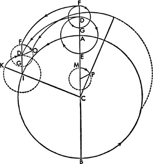
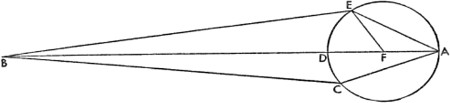
21. Güneş'in Düzensizliğindeki İkinci Farkın Ne Kadar Büyük Olduğu Üzerine
O halde ikinci düzensizliğin, ekliptiğin ya da benzerliğinin sapmasındaki ilk ve basit ayrıklığı izlediği görüldüğüne göre, geçmiş gözlemcilerin gözlemlerindeki bir hata karşımıza çıkmadığı müddetçe, bu yolla düzensizliğin sabit farklarını elde etmiş olacağız.
Hesaptan, İsa'dan sonraki 1515. yıl için yaklaşık 165º39'lık basit bir ayrıklığı çıkarıyoruz; yine bir hesaba göre başlangıç da İsa'dan yaklaşık 64 yıl öncesine kadar gidiyor; o zamandan bu zamana 1580 yıllık bir akış söz konusudur. Bu başlangıca ait en büyük dış merkezlik, yarıçap 10.000 birimken, tarafımızdan 414 birim olarak bulunur. Fakat zamanımızdaki dış merkezlik, gösterildiği gibi, 323 birimdir. Bu durumda AB bir düz çizgi olsun ve üzerindeki B de evrenin merkezi ve Güneş olsun. AB en büyük, BD de en küçük dış merkezlik olsun. Çapı AD olan küçük bir çember çizelim; AC yayı, ilk basit ayrıklıkla orantılı olarak 165º39' olsun.
AB çizgisi basit ayrıklığın başlangıcında, yani A'da bulunduğundan ve AB çizgisi 414 birime, buna bağlı olarak BC çizgisi 323 birime eşit olduğundan AB ve BC kenarları yanında CAD açısıyla birlikte ABC üçgenini elde etmiş olacağız; zira yarım çemberin geri kalan CD yayı verildiğinden CD yayı, 14º21'ya eşittir. O halde doğrusal üçgenlerle ilgili olarak da gösterdiğimiz gibi, verilen AC kenarı ve ABC açısı, yerötenin ortalama ve düzensiz hareketi arasındaki fark bulunur; AC çizgisi verilen yayı ayırdığından, ACD çemberinin AD çapı da elde edilir. Buna göre üçgeni çevreleyen çemberin çapı 20.000 birimken CAD açısı 14º21', CB 2496 birim olduğuna göre ve BC'nin AB'ye oranı belirlendiğine göre; AB 3225 birime; o da ACB kirişine, yani 341º26'ya eşittir. O halde çıkarma işlemiyle, iki dik açı 360º iken CBD açısı 4º13' olur. Ve CBD kirişi AC'ye; o da 735 birime eşittir. O halde AB 414 birimken, AC yaklaşık 95 birime eşittir. AC, verilen yayı ayırdığına göre, AD için çap görevi görecektir. Buna göre AD, ADB'nin 414 birim olduğu durumda 96 birime eşittir ve DB 321 birim olup en küçük dış merkezliğin uzaklığını verir. Fakat CBD çevre açısı 4º13'ya; merkez açısıysa 2º6,5'ya eşit olduğundan, bu aynı zamanda B merkezi etrafındaki AB'nin düzenli hareketinden çıkarılacak eşitlemedir. Buna uygun olarak E noktasında çembere teğet BE düz çizgisi çizilsin ve merkez olarak F alınsın, EF de eklensin. Bu durumda BEF dik üçgeninde FB yarıçapının 10.000 birim iken EF kenarı 48 birim, BDF kenarı 369 birim, EF 1300 birimdir. Ve EF, EBF'nin iki katını ayıran kirişin yarısına; EBF açısı da, dört dik açı 360º iken 7º28'ya eşittir ve bu F'deki düzenli hareket ile E'deki görünen hareket arasındaki en büyük eşitlemedir. Bu şekilde diğer belirli farklar da bulunabilir; örneğin AFE açısı 6ºdir. Buna göre verilen EF ve FB kenarlarının yanı sıra EFB açısıyla birlikte üçgeni elde etmiş olacağız. O halde EBF açısı 41'dır ve bu aynı zamanda eşitlemedir. Fakat AFE açısı 12º ise, eşitleme 1º23'dır; AFE açısı 18º ise, eşitleme 2º3'dır ve diğerleri de yıllık devinimdeki eşitlemelerle ilgili olarak yukarıda söylediklerimiz gibi bu şekilde bulunur.
22. Güneş'in Yerötesinin Düzenli ve Düzensiz Hareketi Nasıl Açıklanır?
O halde ilk basit ayrıklıkla uyumlu olan en büyük dış merkezlik 178. olimpiyatın üçüncü yılına, yani Mısır takvimine göre Büyük İskender'in ölümünün 259. yılına denk geldiğinden, bu hesaba göre eşzamanlı olarak yerötenin hakiki ve ortalama konumu, İkizler'in 5,5ºsinde, ilkbahar ekinoksundan 65,5ºdeydi ve bu anda ortalamayla çakışan hakiki ekinoksun devinmesi 4º38' olduğundan, yerötenin konumu da sabit yıldızlar küresinde 65,5ºden 4º38'nın çıkarılmasıyla Koç'un başından itibaren 60º52' olarak bulunur. Yine 573. olimpiyatın ikinci yılında ve İsa'dan sonraki 1515. yılda yerötenin konumu Yengeç'in 6,5ºsinde bulunur. Fakat hesaba göre ilkbahar ekinoksunun devinmesi 27,25º idi ve 96º40'dan 27,25º çıkarıldığında 69º25' kalır. Buna göre bu noktada 165º39'lık ilk ayrıklıkla birlikte, hakiki konumun ortalamayı izlediği 2º7'lık bir eşitlemenin bulunduğu gösterilmiş; buna binaen Güneş'in yerötesinin ortalama konumunun da 71º32' olduğu anlatılmış oldu. O halde aradaki 1580 Mısır yılı boyunca yerötenin ortalama ve düzenli hareketi 10º41'ydı; biz de bunu rakamsal olarak yıllara bölersek yıllık 24''20'''14'''' kadar bir hareket bulmuş oluruz.
23. Güneş'in Ayrıklığının Düzeltilmesi ve İlk Konumlarının Belirlenmesi Üzerine
Bu 24''20'''14''''ü, 359º44'49''7'''4''''e denk gelen basit yıllık hareketten çıkarırsak, geriye 359º44'24''46'''50''''lük ayrıklığın yıllık düzenli hareketi kalacaktır. Yine 359º44'24''46'''50''''ü 365 güne bölersek, yukarıdaki tablolarda gösterdiğimize de uygun olarak gün başına 59'8''7'''22'''' düşer. Bu şekilde 1. olimpiyatta başlayan yılların başına yerleştirilen konumları elde etmiş oluruz. O halde 573. olimpiyatın ikinci yılında, Ekim ayının başından önceki 18. günde, gündoğumundan sonraki yarım saat içinde Güneş'in ortalama yerötesinin 71º32', Güneş'in bundan uzaklığının ise 82º58' olduğu gösterilmiş olur. İlk olimpiyattan itibaren 2290 Mısır yılı 281 gün 46 dakika vardır ve bu süre boyunca ayrıklık hareketi –tüm devirler hesaplanmamıştır– 42º33'ydı. 42º33'nın 82º58'dan çıkarılmasıyla, ilk olimpiyat için ayrıklık konumu 40º25' olarak bulunur. Ve yukarıda da gösterildiği gibi, benzer şekilde İskender dönemine ait yıllar için konum 166º38'; Caesar dönemi yılları için 211º11' ve İsa dönemi yılları için 211º19'dır.
24. Görünen ile Düzenli Hareket Arasındaki Farklar Tablosu
Fakat Güneş'in düzenli ve görünen hareketleri arasındaki farklılıklara dair ortaya koymuş olduğumuz bu hususların daha anlaşılır kılınabilmesi için, onları içeren altı sütunlu ve 60 satırlı bir tablo oluşturacağız. Hem artan hem de azalan yarım çemberlerden oluşan ilk iki sütun, ekinoksların hareketlerine dair, yukarıda da gösterildiği gibi, 3º artan sayıları içerecek. Üçüncü sütunda Güneş'in yerötesinin ayrıklığı ya da hareketinden artan eşitlemeye ait dereceler yer alacak ve bu eşitleme, derecelerin her bir sırasına uygun olarak yaklaşık 7,5ºye kadar yükselecek. Dördüncü sütun, 60'ya kadar yükselen orantılı dakikalara ayrılacak ve bu dakikalar, basit ayrıklıktan artan en büyük ve en küçük eşitlemeler arasındaki farklara göre hesaplanacak. Bu farklılıkların en büyüğü 32', 1/60'ı ise 32'' olacaktır. Buna göre, yukarıda çizildiği şekliyle dış merkezlikten çıkardığımız farkın büyüklüğüne uygun olarak, her biri 3ºlik sütunda yer alacak ölçüde 60'a kadar bir sayı belirleyeceğiz. Beşinci sütunda yıllık ve ilk ayrıklıktan doğan eşitlemeler, Güneş'in merkezden en kısa mesafesine göre düzenlenecek. Altıncı ve sonuncu sütunda, bu eşitlemelerle en büyük dış merkezlikte ortaya çıkan eşitlemeler arasındaki farklar yer alacak. Tablo şöyledir: